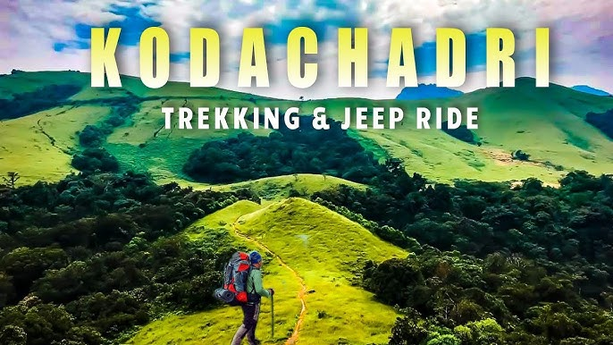

Manche Gowdru Family Trip

Trip Dates: June 05th, 06th, 07th and 8th - 2025.
Itinerary
The Kodachadri Trek is one of the most scenic and thrilling trekking experiences in the Western Ghats of Karnataka, offering a combination of breathtaking views, biodiversity, and spiritual significance
Day 0:(05th June)
- 10:00PM: TT pickup point - Kanakapura .
- Start the journey from Kanakapura towards Shivamogga.
Day 1:(06th June)
- 08AMReach the Sakrebyle Elephant Camp by 08AM, Entry fee per person would be 100Rs.
- 10AMStart to Kavishaila(ಕುವೆಂಪು) by 10AM, Kuvempu belonged to this village and was very attached to it. Indeed, this pen-name Kuvempu (Kannada: ಕುವೆಂಪು)
- 12PM: Let's start to Kodachadri_Jeep_Ride, anybody can go and do this trek on their own. It is a paradise for first-timers, intermediate and experienced trekking enthusiasts. .
- Evening After returning from Jeep ride, move to Sigandurchowdeshwari, where we will Stay at temple rooms and visit the temple and enjoy the Sharavathi backwater.
Day 2:(07th June)
- 6AMStart your day early towards Shri Bheemeshwara Temple & Waterfalls,Sri Bheemalingeshwara Temple is dedicated to Lord Shiva and is one of the ancient temples in Karnataka. According to mythology, the Bheemeshwara temple was constructed by Bheema, the second among the Pandavas.
- 9AM for Kollurmookambikatemple,Devi Mookambike is worshiped here as the Shakthi Devatha.
- 12 AM Start to Suprasha Cave, The Suparsha cave is near to the famous Sri Brahmi Durgaparameshwari temple. It is said that the cave was named after the King Suparsha and the cave is the point of convergence of three devis; Saraswathi, Lakshmi and Kali.
- Afternoon: Start towards Kamalashile Temple and Cave Kamalashile.Kamalashile is named after a stone Linga and has an interesting story associated with it. It is Goddess Sri Brahmi Durga Durgaparameshwari who is worshipped in the form of Linga. The Linga is also known to be a combination and convergence of two eternal powers of Goddesses Mahakali and Maha Lakshmi.
- Evening let's go to Udupi, where we can visit Sri Krishna Temple and stay for a night at Mata Rooms.
Day 3:(08th June)
Members who are interested.
- Shivakumar TN.
- Susheela.
- Nischita.
- Bindu.
(Kid)
- Shivaraj.
- Shwetha.
- Lekhan.
(Kid)
- Yathvik.
(Kid)
- Malini.
- Ashwini.
- Rishitha.
- Deepthi.
- Kushal
- Vishu.
- SwaroopJaggi.
Join the Whatsapp group(Manche_Gowdru_Family_Trip).here
Stay Details, Travel and contact details.
- Stay
6th June Night - Stay at Sigandhuru Temple accomodtion.
7th June night - Stay at Udupi Shri Krsihna mata
- TT details.Click here
- Contact details for any query related to plan.Contacts
Trip Expenses details Check here